Module N7 · Topic 3 of 4
Waveforms and wedging
Every location has a signature, and each maps to the ECG, so you read the tracing against the rhythm strip rather than off pressure alone. The habit this topic builds is a simple one. Look at the ECG first, predict where the pressure event should fall, then check the trace against the prediction. A reading that starts from the pressure trace alone is a guess.
| Location | Signature | Read at |
|---|---|---|
| RA / CVP | a, c, v waves, x and y descents | Ideally at the z point. The a wave peak is also reasonable according to some experts. |
| Right ventricle | tall systole, no dicrotic notch, diastole equals RAP | systole just after the QRS, end-diastole at the R wave |
| Pulmonary artery | dicrotic notch, diastolic step-up, down-sloping runoff | systole within the T wave, end-diastole at the end of the QRS |
| Wedge (PAOP) | venous-looking, a and v only, delayed a wave | the a wave, at end-expiration |
The right atrial tracing
The right atrial tracing has three positive waves and two descents. The a wave is atrial contraction and follows the P wave. The small c wave is the tricuspid valve bulging into the atrium during isovolumetric contraction. The x descent follows as the annulus pulls down. The v wave is atrial filling against a closed valve and follows the T wave. The y descent is early diastolic emptying when the valve opens. Before looking at the figure below, predict where each of these five events should sit against the ECG. Atrial contraction has to follow the P wave, the valve cannot bulge until the ventricle contracts, and the atrium cannot empty until the ventricle relaxes.
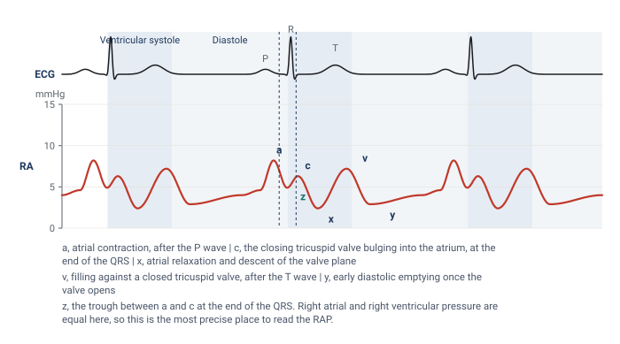
There are several suggested methods for evaluating the RA pressure. Probably the easiest is to measure the pressure at end-expiration at the peak of the a wave. This method offers a rapid, fairly accurate assessment of the right atrial pressure, and many practitioners read the RAP this way for practical purposes, because the z point can be hard to locate precisely when the patient is moving or breathing hard, or when the monitor does not allow close evaluation of the trace. For those seeking a more precise measurement, either averaging the peak and trough pressures of the a wave or reading the pressure at the z point, the point on the waveform that corresponds to the immediate end of the QRS on the ECG, are both reasonable. The z point is the most precise of the three, and it is the method most commonly applied in patients who present with atrial fibrillation, where there is no a wave to read. Whichever point you use, record which one it was. A value read at the a wave peak and a value read at the z point in the same patient can differ by several mmHg, and a trend built from a mixture of the two is not a trend.
The right ventricular tracing
In the right ventricle, systole is a tall peak just after the QRS and diastole equals the right atrial pressure. To tell the RV pressure waveform from the pulmonary artery waveform, look for the absence of a dicrotic notch on the descending portion of the wave. Additionally, the diastolic pressure of the RV wave should mirror the right atrial pressure whereas the diastolic pressure of the pulmonary artery waveform will be higher. Systolic pressure is read at the peak. End-diastolic pressure is read at the R wave, and it is not the lowest point on the trace. The lowest point is the early diastolic minimum just after the valve opens, and the pressure then climbs through diastole as the ventricle fills, with a small final step from atrial contraction.
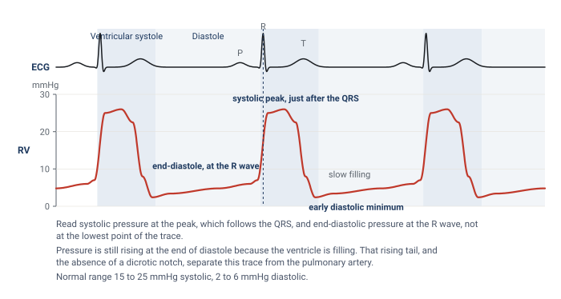
The pulmonary artery tracing
Crossing into the pulmonary artery, systole stays about the same but the diastolic steps up and a dicrotic notch appears as a result of pulmonic valve closure, with a down-sloping runoff whose steepness indirectly reflects pulmonary vascular resistance. Read systolic pressure at the peak, which falls within the T wave, and end-diastolic pressure at the end of the QRS, which is the last moment before the next ejection raises the pressure again. In a patient without pulmonary hypertension, the PA diastolic closely estimates the wedge, which is why you can trend the PA diastolic in such patients. Papolos and colleagues confirmed the practice in 1,225 patients with cardiogenic shock: PA diastolic pressure tracked the wedge in every phenotype except right ventricular shock, where the correlation was weak and the surrogate should not be used.
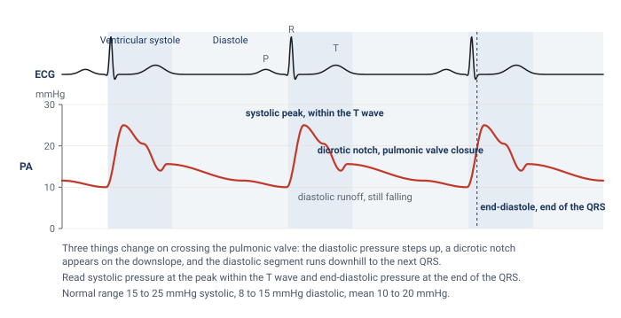
Telling the right ventricle from the pulmonary artery
The two arterial-looking traces have the same systolic pressure, and in a patient with a high right ventricular end-diastolic pressure the diastolic step-up can be small. Occasionally a notch-like deflection appears on a right ventricular trace as well. So before relying on the notch, predict what each chamber is doing in the last part of diastole. The ventricle is filling, so its pressure must be rising as the QRS approaches. The artery is draining into the lungs, so its pressure must be falling. That direction, in the 200 ms before the QRS, is the discriminator that survives when the others are ambiguous.
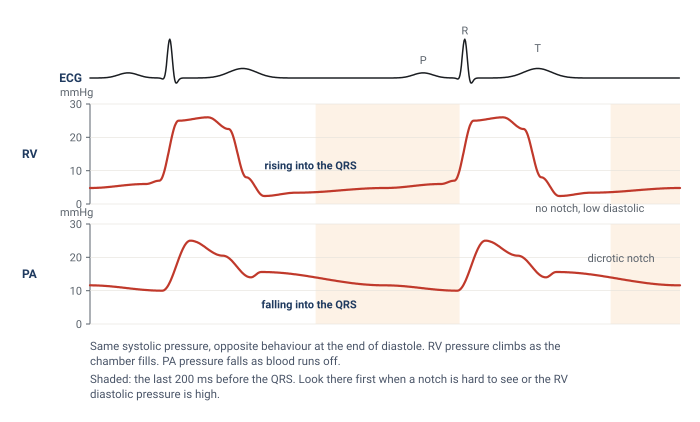
How the wedge works
The wedge is the one measurement on the catheter that is not made where the tip sits, so it is worth understanding what physically happens when the balloon goes up. With the balloon deflated the tip reads the pressure of blood flowing past it. When the balloon inflates in a branch of the pulmonary artery it stops that flow. Beyond the balloon there is now a column of blood that is not moving, running through the small arteries, the capillaries and the pulmonary veins until it rejoins moving blood at the left atrium. Because nothing is flowing through that column there is no pressure drop along it. The pressure at the catheter tip therefore equals the pressure at the far end, in the left atrium.
The column does more than equalise a pressure. It transmits a pulse. Each left atrial contraction, and each systolic surge of filling against the closed mitral valve, pushes on the motionless blood, the blood pushes on the saline inside the catheter, and the transducer at the other end converts that movement into a tracing. The static column behaves as if the catheter had been extended all the way to the left atrium. That is why the wedge looks like an atrial tracing rather than a flat line, and it is why the measurement fails whenever the column is interrupted. A leaking balloon lets blood move again. A tip in a region of lung where alveolar pressure squeezes the capillaries shut breaks the column. A flush pushed through a wedged catheter forces fluid into a vessel that cannot drain, which is why a wedged catheter is never flushed.
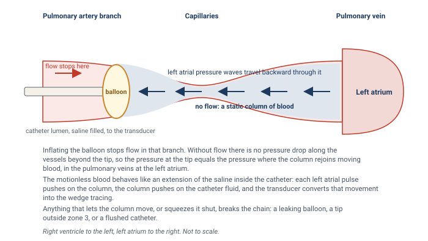
The wedge looks venous, like the CVP but with only two peaks, because the c wave is damped out through the capillaries. Its a wave is delayed to near the end of the QRS, because the pressure has to travel back from the left atrium. Predict this delay before you look for it. The right atrial a wave is read from a catheter sitting in the right atrium, a few centimetres from the contraction. The wedge a wave has travelled from the left atrium back through the pulmonary veins and capillaries. Same contraction, longer trip, later arrival on the strip.
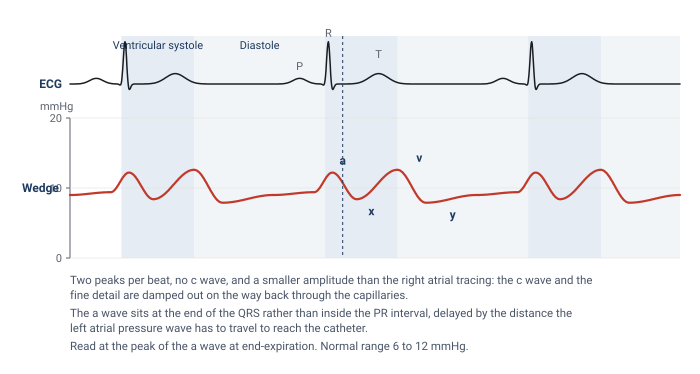
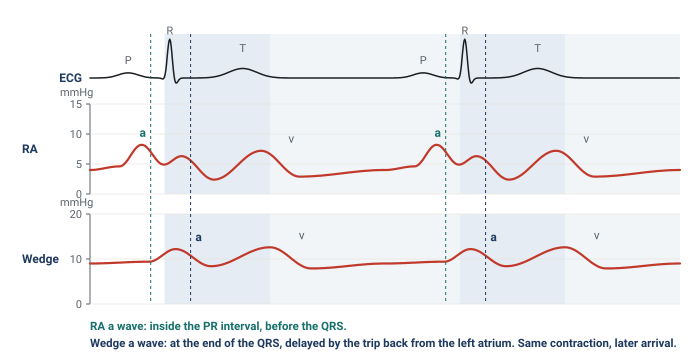
What the wedge stands for, and where the chain breaks
The wedge is a stand-in for left atrial pressure, and at the a wave, for left ventricular end-diastolic pressure and therefore preload. That chain (wedge equals left atrial pressure, which equals LV end-diastolic pressure, which stands for preload) has weak links worth knowing, and each link fails in a recognisable set of patients.
- Wedge to left atrial pressure. The wedge overestimates left atrial pressure when something between the column and the atrium adds resistance or the atrium itself is stiff or obstructed: a myxoma, scarring from radiation or a Cox-Maze procedure, pulmonary vein stenosis, or a column that has been cut by alveolar pressure in the wrong lung zone. It also overestimates when the balloon has only partly occluded the branch and the trace still carries a contribution from arterial pressure, which Leatherman and Shapiro measured at 13 mmHg on average in patients with pulmonary hypertension.
- Left atrial pressure to LV end-diastolic pressure. Left atrial pressure diverges from LV end-diastolic pressure with mitral stenosis, where the atrium sits above the ventricle by the gradient across the valve, with mitral regurgitation, where the systolic v wave drags the mean up, and with aortic regurgitation, where the ventricle keeps filling from the aorta after the mitral valve has closed and ends diastole above the atrium.
- LV end-diastolic pressure to preload. Preload is a volume. Pressure stands for volume only through the compliance of the ventricle and the pressure around it, and both change from patient to patient and hour to hour. This link is the subject of Module N5 and is not repeated here.
How well does the first pair of links hold in practice? Halpern and Taichman examined 3,926 patients with pulmonary hypertension who had simultaneous right and left heart catheterisation. Of the 580 whose wedge was 15 mmHg or below, and who would therefore have been labelled pre-capillary disease, 310 had a left ventricular end-diastolic pressure above 15 mmHg. The wedge discriminated a high from a normal LVEDP moderately well, with an area under the curve of 0.84, but was poorly calibrated to it, with limits of agreement from 15 mmHg below to 10 mmHg above. For the critical care question, which is usually whether the left heart filling pressure is markedly elevated, the wedge is a reasonable tool. For a threshold decision at 15 mmHg it is not a substitute for the ventricle itself.
Large v waves
A large v wave, classically in acute mitral regurgitation, drags the mean up and makes the wedge read high. The mechanism is worth stating precisely, because it tells you both what causes the wave and what to do about it. During ventricular systole the mitral valve is closed and the left atrium fills passively from the pulmonary veins, which is the normal v wave. If the valve leaks, the atrium also receives part of the ventricular stroke volume, driven in at ventricular pressure, and the v wave grows in proportion to the regurgitant volume. The size of the wave depends just as much on the atrium as on the leak. A small, stiff atrium turns a modest regurgitant volume into a tall wave, and a large, compliant atrium in chronic regurgitation can absorb a severe leak with hardly any v wave at all. Fuchs and colleagues found that among 50 patients with large v waves, 18 had no or trace mitral regurgitation, and among 37 with severe regurgitation only 16 had large v waves. Mitral stenosis, a mitral prosthesis, a ventricular septal defect, and heart failure with a stiff atrium all produce large v waves without regurgitation. A giant v wave is a finding to explain, not a diagnosis.
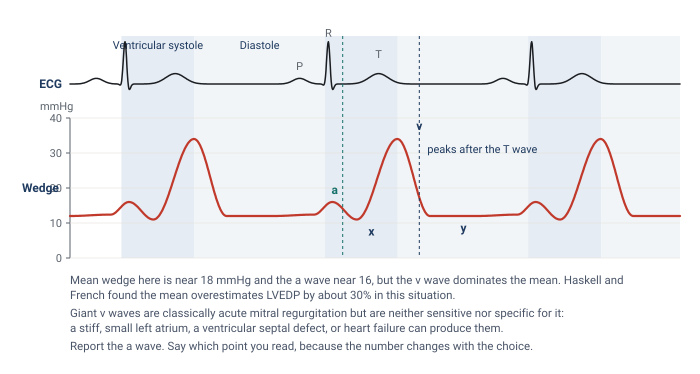
Two practical problems follow. The first is recognition. A tall v wave makes the wedge tracing look pulsatile and arterial, and it is regularly mistaken for a pulmonary artery trace that failed to wedge. The ECG settles it: the v wave peaks after the T wave, whereas a pulmonary artery systolic peak sits inside the T wave and is followed by a dicrotic notch. The second problem is which number to report. Monitors display a mean, and when the v wave dominates the cycle the mean overstates the pressure the ventricle filled at. Haskell and French measured this directly in 52 patients with mitral regurgitation: in those with v waves more than 10 mmHg above the a wave, the mean wedge overestimated left ventricular end-diastolic pressure by about 30 percent, while the trough of the x descent, just before the v wave, matched it. Three options exist. Report the a wave, which is the end-diastolic point and the preferred choice. Report the average of the a and v waves, which some units use as a compromise. Or report the mean across the whole respiratory cycle, which is what the monitor offers and which is the least specific. Whichever you choose, write down which point was read and stay with it for serial measurements, because a number that moves from the a wave to the mean between readings will look like a change in the patient.
Location in the lung matters
The static column argument assumed that the blood beyond the balloon is connected, all the way to the left atrium, through open vessels. Whether that is true depends on where in the lung the tip sits. West described the lung in three zones by the relationship between alveolar pressure and the pressures in the pulmonary artery and vein. Near the apex, in zone 1, alveolar pressure exceeds both, the capillary is held shut, and there is no flow. In zone 2 arterial pressure exceeds alveolar pressure but alveolar pressure still exceeds venous pressure, so the capillary is pinched at its venous end and flow is set by the arterial minus alveolar difference, a vascular waterfall. In zone 3, in the dependent lung, both vascular pressures exceed alveolar pressure and the capillary stays open throughout the cycle.
![The lung divided into three zones by the relationship between alveolar, pulmonary arterial and pulmonary venous pressure. In zone 1 at the apex alveolar pressure exceeds arterial pressure and the capillary is held closed. In zone 2 arterial pressure exceeds alveolar pressure but alveolar pressure exceeds venous pressure, so the capillary is pinched at the venous end. In zone 3 in the dependent lung both arterial and venous pressure exceed alveolar pressure and the capillary stays open throughout the cycle.](img/west-lung-zones.svg)
The tip must sit in zone 3, where an uninterrupted column of blood connects it to the left atrium. In zones 1 and 2 the alveolar pressure exceeds the venous pressure, and the wedge then reflects alveolar, not vascular, pressure. Two things make this a live problem rather than a textbook one. First, the balloon usually carries the tip to the lower lobes because that is where most of the flow goes, and Krishtopaytis and colleagues found the valid wedge in the lower third of the lung in 69 percent of 195 catheterisations, but a tip can lodge higher. Second, the zones are not fixed. They are defined by pressures, and the pressures move. Raising PEEP raises alveolar pressure. Diuresis or bleeding lowers venous pressure. Either can convert the region around a well placed tip from zone 3 to zone 2 without the catheter moving at all, which is what Tooker and Shasby and their colleagues showed for catheter height relative to the left atrium during positive pressure ventilation. Teboul and colleagues added the useful caveat that in severe ARDS the stiff, consolidated lung protects the vessels from transmitted alveolar pressure, and the wedge tracked the left ventricular end-diastolic pressure closely up to a PEEP of 20 cmH2O when the tip was at or below the level of the left atrium. The risk of zone conversion is highest in compliant lungs with a high PEEP and a low venous pressure.
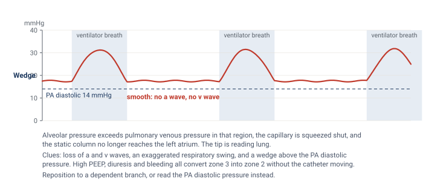
So a wedge that reads high and non-pulsatile at a low balloon volume is a red flag that you are reading lung rather than left atrium. The specific clues are a tracing without recognisable a and v waves, a respiratory swing that is exaggerated compared with the pulmonary artery trace, and a wedge that sits above the pulmonary artery diastolic pressure. In a spontaneously breathing patient with a normal chest the problem is rare. In a patient on high PEEP who has just been diuresed it should be the first explanation considered for a wedge that does not fit the clinical picture, which is exactly the situation in the question bank for this topic.
Read every pressure at end-expiration
Every pressure the catheter reports is referenced to atmosphere, and the chambers it reads sit inside a thorax whose pressure swings with each breath. The convention is to read at end-expiration, when pleural pressure has returned closest to atmospheric and the number comes closest to the pressure that actually distends the chamber. What changes between a spontaneous breath and a ventilator breath is the direction of the swing. A spontaneous inspiration lowers pleural pressure and pulls the trace down, so end-expiration is the peak of the swing. A delivered breath raises pleural pressure and pushes the trace up, so end-expiration is the trough. A useful mnemonic from the question bank is that on the ventilator, end-expiration is the valley.
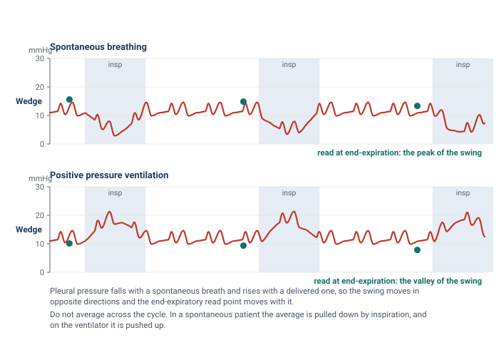
Averaging across the cycle without regard to phase is not a neutral alternative. In a spontaneously breathing patient the average is pulled down by every inspiration, and on the ventilator it is pushed up, so the unphased mean carries a bias whose direction depends on the mode of breathing. Two situations deserve a further caution. A patient who is actively exhaling, using the abdominal muscles, raises pleural pressure throughout expiration, and the end-expiratory value is then falsely high. Magder and colleagues described the problem and the tracing that reveals it. And in ventilated patients who are still making large respiratory efforts, Hoyt and Leatherman found that the end-expiratory wedge exceeded the value measured after brief muscle relaxation by 11 mmHg on average, while the midpoint between the end-expiratory value and the inspiratory nadir came within 3 mmHg of it. When the respiratory excursion on the wedge trace is 15 mmHg or more, the end-expiratory number should be treated as an upper bound rather than a measurement.
Is the catheter properly wedged?
A wedge that is wrong is worse than no wedge, because it is a number with the authority of a measurement behind it. The habit of checking whether the balloon has actually occluded the vessel, and nothing more, is what separates a valid wedge from an invalid one. Tonelli and colleagues, in the study that put the problem on a quantitative footing, set five criteria for a valid wedge from hemodynamic, fluoroscopic and blood gas data, and found that only 70 percent of measurements in patients referred for pulmonary hypertension met four of them. In the same series a fully inflated balloon read 4 mmHg higher than a half inflated one in the patients with pulmonary hypertension, and wedge angiography showed that some inflations had not stopped flow at all. The practical checks that follow are drawn from that work and from what came after it.
- The tracing changes character promptly. On inflation the arterial trace should give way, within a beat or two, to a damped atrial trace with a and v waves and no dicrotic notch, and the arterial trace should return the moment the balloon is deflated. A wedge that has to be waited for, or that lingers after deflation, is not a wedge.
- The number sits below the PA diastolic pressure. The pulmonary artery diastolic pressure is what drives blood through the lungs to the left atrium, so it must be higher than the wedge. A wedge above the PA diastolic pressure means overwedging, a pseudo-wedge from the wrong zone, or a giant v wave, and each of those has its own signature above.
- The balloon volume is right. A valid wedge should appear at about 1 to 1.5 mL of air. Krishtopaytis and colleagues recorded a mean inflation volume of 1.0 mL at a valid wedge, with the tip 52.6 cm from the introducer hub. A wedge that appears with less than 1 mL means the tip has migrated distally: deflate, withdraw 1 to 2 cm, and try again. A balloon that takes the full 1.5 mL and still shows an arterial trace is either ruptured or sitting in a vessel too large to occlude.
- The tracing settles rather than climbs. The overwedged trace below is the clearest example of a pressure that keeps rising until the balloon is let down.
- The respiratory swing is proportionate. A wedge that swings far more than the pulmonary artery trace, or that has lost its a and v waves, is reading alveolar pressure.
- The blood at the tip is arterial. With the balloon inflated, blood slowly aspirated from the distal port has come from the pulmonary veins and should be fully oxygenated. Viray and colleagues instituted the check for every wedge above 15 mmHg and found that, despite a convincing tracing and fluoroscopic position, only half of first attempts were truly occlusive by saturation, defined as 90 percent or within 5 percent of the arterial value. With up to two further attempts 91 percent became occlusive, the corrected wedge was 5 mmHg lower on average in those patients, and 12 percent of the whole cohort changed diagnostic category. Krishtopaytis and colleagues could aspirate wedge blood in 72 percent of catheterisations, with a median saturation of 97 percent. The check takes a minute and is the only one that directly tests whether the column is static.
- The position is plausible. On a chest film or fluoroscopy the tip should sit in a lower lobe branch, below the level of the left atrium on a lateral view, and no more than a few centimetres beyond the hilum.
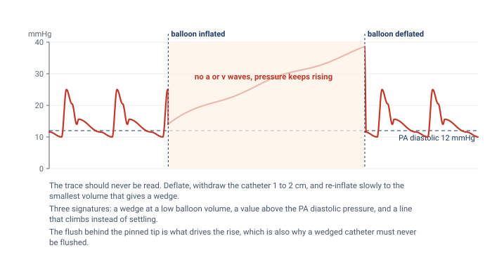
Overwedging happens when the balloon traps the tip against the vessel wall, usually because the tip has migrated into a branch too small for it. The continuous flush that protects the lumen from clot then pumps fluid into a dead-end space, and the pressure rises steadily with no a or v wave and no relation to the left atrium. This situation risks pulmonary infarction and rupture and requires immediate balloon deflation. The catheter is then withdrawn a few centimetres and re-inflated slowly to the smallest volume that produces a wedge, and both the depth and that volume are recorded so the next operator knows what to expect. Partial occlusion is the mirror image: in patients with pulmonary hypertension the balloon may fail to stop flow completely, the trace keeps an arterial contribution, and the wedge is overestimated. Leatherman and Shapiro found the error averaged 13 mmHg in fourteen such patients, and the clue was a previously wide gradient between PA diastolic and wedge pressure that narrowed abruptly during the suspect measurement.
Abnormal right atrial tracings
The right atrial tracing carries information beyond its mean, and two patterns turn up often enough at the bedside to be worth recognising on sight. Both are read the same way as the normal trace: find the ECG event first, then ask what the atrium was doing at that moment.
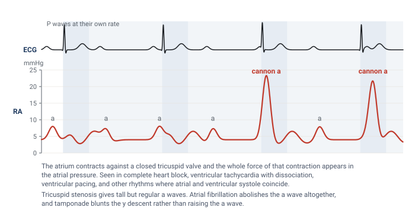
A cannon a wave is an intermittent, very tall a wave produced when the atrium contracts against a closed tricuspid valve. In sinus rhythm the a wave always precedes ventricular systole and the valve is open, so the wave is small. When atrial and ventricular activity are dissociated, as in complete heart block, ventricular tachycardia with retrograde conduction, or ventricular pacing, some atrial contractions fall during ventricular systole and the atrium empties into a closed valve. The result is a tracing in which most a waves are ordinary and a few are enormous, in step with nothing on the ventricular rhythm. Regularly tall a waves, on every beat, mean something different: an atrium contracting against a stenotic tricuspid valve or a stiff, hypertrophied right ventricle. And a tracing with no a waves at all, only c and v waves, is atrial fibrillation, which is the situation where the z point earns its place.
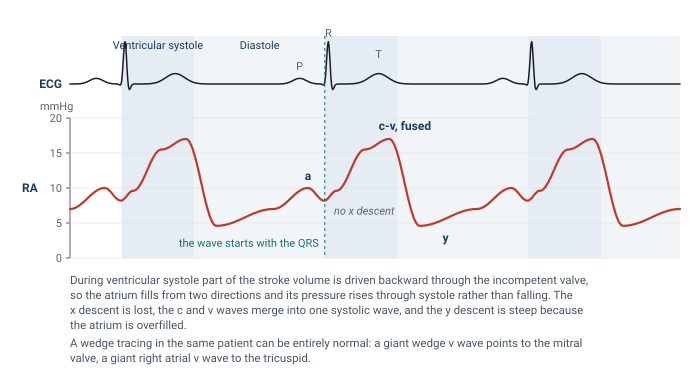
In tricuspid regurgitation the v wave grows and changes shape. The normal v wave builds late in systole as the atrium fills passively from the venae cavae. When the valve leaks, the atrium also receives part of the stroke volume from the moment the ventricle contracts, so the pressure begins to rise at the QRS instead of falling, the x descent is lost, and the c and v waves merge into one broad systolic wave that can look like a damped ventricular trace. The y descent is then steep because an overfilled atrium empties quickly once the valve opens. The wedge in the same patient can be entirely normal, which is the discriminator that matters: a giant v wave on the wedge points to the mitral valve, a giant v wave on the right atrial trace to the tricuspid. Two further patterns belong to the pericardium. In tamponade the y descent is lost and the x descent preserved, because ejection is the only moment at which total cardiac volume can fall and early diastolic filling is prevented, and Reddy and colleagues showed that right ventricular end-diastolic pressure equalled pericardial pressure in every patient with tamponade and fell with drainage. In constriction both descents are steep, giving the M or W shape. Module I14 (opens in a new tab) works through the full series.
Artifact: catheter whip
Not every abnormal trace is physiology. A tip that sits in a position where the flow or the contracting heart can flick it, typically too proximally in the main pulmonary artery or still partly in the right ventricle, produces rapid, spiky oscillations superimposed on the pressure wave. The spikes bear no relation to the ECG, the systolic and diastolic values cannot be read, and the mean is usually preserved. The fix is positional rather than electronic. Advance the catheter slightly with the balloon inflated, watching for the wedge, so that the tip settles in a more distal branch, and confirm with a flush test that the system itself is not underdamped, since an underdamped line can produce a similar look. Nadeau and Noble catalogued this and the other ways a pulmonary artery catheter tracing is misread.
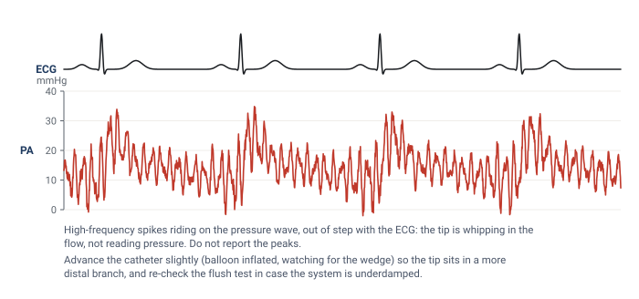
Normal values, and a worked reading
| Site | Normal pressure | Read at |
|---|---|---|
| RA / CVP | 2 to 6 mmHg | z point, or the a wave peak, at end-expiration |
| Right ventricle | 15 to 25 / 2 to 6 mmHg | peak after the QRS, and the R wave |
| Pulmonary artery | 15 to 25 / 8 to 15 mmHg, mean 10 to 20 mmHg | peak within the T wave, and the end of the QRS |
| Wedge (PAOP) | 6 to 12 mmHg | a wave peak, at end-expiration |
Two thresholds within those ranges carry diagnostic weight. Kovacs and colleagues pooled catheter data from 1,187 healthy people and found a resting mean pulmonary artery pressure of 14 mmHg with a standard deviation of 3, rarely exceeding 20, and the 2022 European guidelines accordingly define pulmonary hypertension as a mean above 20 mmHg. The same guidelines use a wedge of 15 mmHg as the boundary between pre-capillary and post-capillary disease, so a wedge above 15 is abnormal and one between 12 and 15 is borderline.
The tracings in this topic answer the question of where the catheter is and what the chambers are doing. What they do not give is flow. The last topic takes up the two ways the catheter measures cardiac output, thermodilution and the Fick principle, and the conditions under which each can be believed.
References
- Swan HJ, Ganz W, Forrester J, Marcus H, Diamond G, Chonette D. Catheterization of the heart in man with use of a flow-directed balloon-tipped catheter. N Engl J Med. 1970;283(9):447-451. doi:10.1056/NEJM197008272830902.
- West JB, Dollery CT, Naimark A. Distribution of blood flow in isolated lung; relation to vascular and alveolar pressures. J Appl Physiol. 1964;19:713-724. doi:10.1152/jappl.1964.19.4.713.
- Magder S. Right atrial pressure in the critically ill: how to measure, what is the value, what are the limitations? Chest. 2017;151(4):908-916. doi:10.1016/j.chest.2016.10.026.
- Magder S, Serri K, Verscheure S, Chauvin R, Goldberg P. Active expiration and the measurement of central venous pressure. J Intensive Care Med. 2018;33(7):430-435. doi:10.1177/0885066616678578.
- Halpern SD, Taichman DB. Misclassification of pulmonary hypertension due to reliance on pulmonary capillary wedge pressure rather than left ventricular end-diastolic pressure. Chest. 2009;136(1):37-43. doi:10.1378/chest.08-2784.
- Haskell RJ, French WJ. Accuracy of left atrial and pulmonary artery wedge pressure in pure mitral regurgitation in predicting left ventricular end-diastolic pressure. Am J Cardiol. 1988;61(1):136-141. doi:10.1016/0002-9149(88)91319-7.
- Fuchs RM, Heuser RR, Yin FC, Brinker JA. Limitations of pulmonary wedge V waves in diagnosing mitral regurgitation. Am J Cardiol. 1982;49(4):849-854. doi:10.1016/0002-9149(82)91968-3.
- Pichard AD, Kay R, Smith H, Rentrop P, Holt J, Gorlin R. Large V waves in the pulmonary wedge pressure tracing in the absence of mitral regurgitation. Am J Cardiol. 1982;50(5):1044-1050. doi:10.1016/0002-9149(82)90415-5.
- Tonelli AR, Mubarak KK, Li N, Carrie R, Alnuaimat H. Effect of balloon inflation volume on pulmonary artery occlusion pressure in patients with and without pulmonary hypertension. Chest. 2011;139(1):115-121. doi:10.1378/chest.10-0981. Free full text.
- Krishtopaytis E, Obeidat M, Ramahi N, Abdeljaleel F, Lane J, Toth D, et al. Number of attempts and interventions to obtain a valid pulmonary artery wedge pressure. Cardiovasc Diagn Ther. 2024;14(5):911-920. doi:10.21037/cdt-24-189. Free full text.
- Viray MC, Bonno EL, Gabrielle ND, Maron BA, Atkins J, Amoroso NS, et al. Role of pulmonary artery wedge pressure saturation during right heart catheterization: a prospective study. Circ Heart Fail. 2020;13(11):e007981. doi:10.1161/CIRCHEARTFAILURE.120.007981. Free full text.
- Leatherman JW, Shapiro RS. Overestimation of pulmonary artery occlusion pressure in pulmonary hypertension due to partial occlusion. Crit Care Med. 2003;31(1):93-97. doi:10.1097/00003246-200301000-00015.
- Tooker J, Huseby J, Butler J. The effect of Swan-Ganz catheter height on the wedge pressure-left atrial pressure relationships in edema during positive-pressure ventilation. Am Rev Respir Dis. 1978;117(4):721-725. doi:10.1164/arrd.1978.117.4.721.
- Shasby DM, Dauber IM, Pfister S, Anderson JT, Carson SB, Manart F, et al. Swan-Ganz catheter location and left atrial pressure determine the accuracy of the wedge pressure when positive end-expiratory pressure is used. Chest. 1981;80(6):666-670. doi:10.1378/chest.80.6.666.
- Teboul JL, Zapol WM, Brun-Buisson C, Abrouk F, Rauss A, Lemaire F. A comparison of pulmonary artery occlusion pressure and left ventricular end-diastolic pressure during mechanical ventilation with PEEP in patients with severe ARDS. Anesthesiology. 1989;70(2):261-266. doi:10.1097/00000542-198902000-00014.
- Hoyt JD, Leatherman JW. Interpretation of the pulmonary artery occlusion pressure in mechanically ventilated patients with large respiratory excursions in intrathoracic pressure. Intensive Care Med. 1997;23(11):1125-1131. doi:10.1007/s001340050468.
- Nadeau S, Noble WH. Misinterpretation of pressure measurements from the pulmonary artery catheter. Can Anaesth Soc J. 1986;33(3 Pt 1):352-363. doi:10.1007/BF03010750.
- Papolos AI, Kenigsberg BB, Singam NSV, Berg DD, Guo J, Bohula EA, et al. Pulmonary artery diastolic pressure as a surrogate for pulmonary capillary wedge pressure in cardiogenic shock. J Card Fail. 2024;30(6):853-856. doi:10.1016/j.cardfail.2024.02.021.
- Kovacs G, Berghold A, Scheidl S, Olschewski H. Pulmonary arterial pressure during rest and exercise in healthy subjects: a systematic review. Eur Respir J. 2009;34(4):888-894. doi:10.1183/09031936.00145608.
- Humbert M, Kovacs G, Hoeper MM, Badagliacca R, Berger RMF, Brida M, et al. 2022 ESC/ERS Guidelines for the diagnosis and treatment of pulmonary hypertension. Eur Heart J. 2022;43(38):3618-3731. doi:10.1093/eurheartj/ehac237.
- Reddy PS, Curtiss EI, O'Toole JD, Shaver JA. Cardiac tamponade: hemodynamic observations in man. Circulation. 1978;58(2):265-272. doi:10.1161/01.cir.58.2.265.